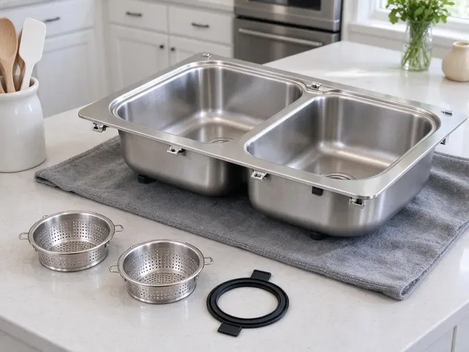
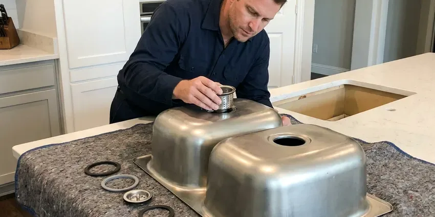
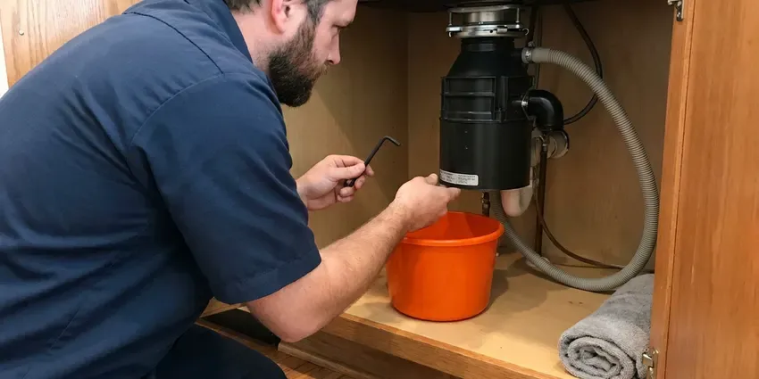

Grease Trap Installation in Minneapolis, MN
CNV Plumbing installs indoor grease traps and outdoor interceptors for Minneapolis kitchens, with the permit handled.
- Overnight Installs Available
- Written Estimates
- Sized to PDI and ASME
- Permit Paperwork Handled
Opening a Kitchen in Minneapolis, MN?
Tell us what drains to the trap and we will size it before the visit.
Indoor Traps and Outdoor Interceptors in Minneapolis, MN
CNV Plumbing handles grease trap installs from the permit to the final inspection. Our crew sets the unit, connects it and waits on site for the inspector's signature. Most indoor jobs take a day. We leave you with the documents the sewer authority wants on file.
Work we handle every week:
- Hydromechanical trap sizing by GPM
- Automatic grease removal devices
- Units certified to PDI G-101 or ASME

Additional Kitchen Plumbing Services in Minneapolis, MN
Our kitchen plumbing services in Minneapolis, MN cover sinks, disposals, dishwashers, and grease traps so your kitchen keeps running without backups or leaks.


Kitchen Sink Installation near Minneapolis

Garbage Disposal Repair near Minneapolis

Customers
Why Choose CNV Plumbing for Grease Trap Installation in Minneapolis, MN?
Code requires a flow control fitting on most hydromechanical traps, and we still find kitchens running without one. Without it, a dumped sink overwhelms the unit. We install the fitting, vent the air intake to code and test the trap with a full sink drain before we leave, so you know it handles your worst case.
- Sized From Your Fixtures, We calculate flow from every sink, floor sink and dish machine that ties in.
- Flow Control Included, Every hydromechanical trap gets a vented flow control fitting, which inspectors check first.
- Cleanable Placement, We leave room to lift the lid and scrape the baffles without moving equipment.
Citywide Coverage
Neighboring towns around Minneapolis often run separate sewer programs with different grease rules. One town may want a sampling box while the next does not. We keep track of which programs ask for what, so the trap you get matches the authority that actually inspects your kitchen. Paperwork follows the rules too.
Experienced Team
Ask any of our plumbers why a trap needs a flow control and you will get a straight answer, not a sales pitch. Our crew walks you through the sizing in plain language. We show your staff how to clean the trap and keep the log. It takes ten minutes.
Safety-First Approach
Grease waste is regulated, so the old trap's contents go to a licensed hauler, not down another drain. We keep the manifest for your records. Old traps are pumped empty before they come out of the floor. Spills are the biggest risk.
Trusted Certified Minneapolis Plumbing Services Professionals
At CNV Plumbing, we take pride in licensed, certified plumbing services throughout Minneapolis, MN. Those papers on the wall mean something. Our plumbers hold recognized industry credentials, and they follow strict safety and quality rules on every repair, installation and maintenance call we run.
Call Us Now PHCC Plumbing Contractor Recognition
PHCC Plumbing Contractor Recognition Better Business Bureau (BBB) Accreditation
Better Business Bureau (BBB) Accreditation Angi Certified Pro
Angi Certified Pro ISO 9001 Quality Management Certification
ISO 9001 Quality Management CertificationRestaurant Grease Trap Installation in Minneapolis, MN
Commercial Kitchen Grease Trap Installs in Minneapolis
Every commercial install starts with a fixture list. The tech walks the kitchen and writes down every fixture that drains to the trap and how fast each one empties. That number decides between an indoor unit and an outdoor tank, and where it can go with clean pipe runs to the sewer. Fewer bends, fewer clogs.

Food Truck Commissary and Ghost Kitchen Traps in Minneapolis, MN
Commissary kitchens see a dozen trucks dumping wash water in the same two hours, which is a different load from a restaurant spreading it over a long shift. We size for that spike. Ghost kitchens with four or five brands under one roof often share a single trap, so the fixture count can be higher than the floor plan suggests. Each brand's prep sink counts.
New Restaurant Build-Out Grease Traps in Minneapolis
On a new build-out, the grease trap gets decided before the slab is poured, not after. We work from the architect's plumbing sheets and the kitchen equipment schedule. Changes get expensive. Saw-cutting a finished floor to relocate a trap can add several days to a build-out, so we flag sizing or location problems at plan review.
Automatic Grease Removal Units in Minneapolis
An automatic grease removal unit heats the trapped grease and skims it into a container on a timer, so staff empty a bucket instead of scraping a tank. They cost more up front. Plan for a dedicated circuit near the unit, which your electrician will need to run. Fry-heavy kitchens like them most.
In-Ground Gravity Interceptor Installation in Minneapolis, MN
Buffets, grocery delis and kitchens doing several hundred covers a night usually end up with an in-ground gravity interceptor of 1,000 gallons or more. The work is excavation and a level gravel bed, then the tank and its inlet and outlet piping. Basements are the norm, so drain tile, sump pumps and foundation drainage are central to keeping homes dry. What comes out of the hole decides our shoring and backfill. Risers bring the lids to grade.
Residential Grease Interceptor Setup in Minneapolis, MN
Homes rarely need a grease trap, though some do. We see them in licensed home kitchens and in houses where the sewer lateral keeps clogging with grease. A small 4 to 7 GPM unit under the kitchen sink catches most of it, and cleaning takes about ten minutes with a spatula and a bucket. Check with your local health office first.
Under-Sink Grease Trap Setup in Minneapolis, MN
Small cafes and coffee bars often get by with a 10 to 25 GPM hydromechanical trap tucked under the prep sink or beside it. It sits on the floor or in a recess, with the flow control fitting on the inlet side. Clearance matters most. Your staff needs to lift the lid and clean it weekly, so we leave space to do that without unbolting anything.

Grease Trap Sizing and Placement in Minneapolis, MN
Sizing starts with fixture drain rates and ends with where the trap can physically go. A trap 40 feet from the sink lets grease cool and stick in the pipe before it ever reaches the unit. Closer is better. For outdoor tanks we measure the hose run from where a pump truck can park.
Grease Trap Installation Near Me in Minneapolis, MN
Our service area covers Minneapolis and the towns around it, out to roughly an hour's drive. Outlying towns get the same lead times as jobs in the city. Distance rarely changes price. For outdoor interceptors, we line up tank delivery and the excavator from suppliers close to the site, which keeps hauling costs down on bigger jobs.
Restaurant owners around Minneapolis call us for new installs and the occasional emergency swap, and the phone at (612) 712-9569 is answered seven days a week. Weekend calls get a real person. Backups get same-day priority because a closed kitchen costs you every hour.
CNV Plumbing at a Glance
- Fully licensed plumbing team covering Minneapolis, MN
- 24/7 emergency service with same-day scheduling
- Upfront, flat-rate pricing before work begins
- 4.8-star rated by 501+ Minnesota customers
Minneapolis Map
Minneapolis Information
- Population
- 425,115
- Area codes
- 612/763/952
- Service area
- Minneapolis and towns within a 40 mile drive
- Nearby
- St. Louis Park, Edina, St. Paul, Minnetonka
A correctly sized grease trap keeps grease out of your lateral and out of the public main in Minneapolis, MN. Extremely cold, long winters are the biggest stress on plumbing in Minnesota, and incoming water stays cold for much of the year.
Talk to a Plumber
Call CNV Plumbing for honest, reliable plumbing from people who know the trade in Minneapolis, MN.
Our Specialized Plumbing Services in Minneapolis, MN
At CNV Plumbing, you get every kind of plumbing service from one company across Minneapolis, MN. We go from leak detection all the way to full system installations, for homes and commercial buildings, and we do it quickly at a fair price. Here are the core services we offer:


Our Grease Trap Installation Process in Minneapolis, MN
Indoor or outdoor, the order of work is the same for every trap we install in Minneapolis.
First Call
Reach us at (612) 712-9569. We ask about your fixtures, your seat count and your opening date.
Site Visit
A plumber checks the space in your Minneapolis kitchen, looks at the existing drain lines with a camera and finds a cleanable spot for the trap.
Permit Filing
We file the plumbing permit and the sewer authority's FOG review, with the sizing math attached so it does not bounce back.
Frequently Asked Questions About Grease Trap Installation in Minneapolis
Expect roughly $1,500 to $4,000 for a small indoor trap and $7,000 to $20,000 or more for an outdoor gravity interceptor. Recessing an indoor unit into the slab pushes the price up because of saw-cutting and patching. Location drives the rest. Lids under traffic cost more, and so does repaving.
An under-sink hydromechanical trap with good access is usually a half-day job, including the flow control and a leak test. Recessing one into the slab adds a day or two for saw-cutting and patching. Outdoor tanks are different. Plan on two to five days for a gravity interceptor once the permit is in hand, depending on depth, soil and how much paving we have to restore.
Nearly every food business needs one. Codes require one wherever sinks or dish machines send greasy waste to the sewer. A few low-grease operations get waived, and the sewer authority makes that call. Ask before you sign the lease.
For indoor traps we lean on Zurn, Watts, Schier and Endura, because their parts are easy to find and their units carry PDI or ASME certification. We like the plastic bodies from Schier where steel would rust out. Brand matters less than sizing. A well-known trap installed too small will still fail inspection, so we pick the size first and the brand second.
As close to the grease-producing fixtures as the space allows, so grease does not cool and coat the pipe before it reaches the trap. Leave room to open the lid and clean it without moving equipment. Never under a cook line. Outdoor interceptors go where a pump truck can park within reach of the hose and where the lids will not end up under a dumpster or a parked car.
Size comes from flow, and flow comes from your fixtures. We add up the drain rate of each sink compartment, floor sink and dish machine, then apply the code's drain-down time to get gallons per minute. Gravity tanks use volume instead. Outdoor tanks get sized by the sewer authority's formula, which we run for you.
Indoor hydromechanical traps and outdoor gravity interceptors cover nearly every job we do. For fry-heavy kitchens we also set automatic units that skim grease on a timer. Most cafes go hydromechanical. High-volume kitchens usually get an outdoor gravity tank, especially if the sewer authority asks for one.
Plastic hydromechanical traps often last 20 years or more, while coated steel traps can rust out in 7 to 15 depending on how harsh the wastewater runs. A precast interceptor can last a very long time if it is pumped on schedule and the coating holds. Cleaning habits matter most. A trap that is scraped with a metal tool every week or left full of grease for months ages much faster than one that gets regular service.
What Our Customers Say About Our Plumbing Experts

Laura S.
Our 40 gallon tank started leaking from the bottom after thirteen years. The tech hauled the old one out, set a new unit with a fresh expansion tank, and had hot water running in about four hours. He took the old tank with him too.
Water Heater Replacement · St. Paul, MN
James P.
Our restaurant had a slow leak at the hand sink that was rotting the cabinet base. CNV Plumbing came in at six in the morning before prep, replaced the trap and both supply lines, and was packed up before my first cook clocked in.
Commercial Plumbing · Bloomington, MN
Patricia H.
We had a slab leak that two other companies could not find. CNV Plumbing located it in under an hour with a listening device. They rerouted the line through the attic instead of breaking up the floor, so we kept our kitchen tile.
Slab Leak Repair · Minneapolis, MNAngela D.
Our sump pump quit during a storm and the water was an inch from the basement carpet. CNV Plumbing put in a new pump with a battery backup that same evening. We have had two heavy rains since. It kicked on both times.
Sump Pump · Edina, MN
Megan L.
Our upstairs tub drained so slowly that every shower turned into a bath. CNV Plumbing pulled a wad of hair out of the stopper and then snaked the line past the trap. Three months later it still drains fast.
Drain Cleaning · Edina, MNJessica T.
We were adding a gas range in a kitchen remodel and needed a new line run from the meter. The plumber pulled the permit, ran the pipe through the crawl space, and had it inspected and approved within the week.
Gas Line Repair · Bloomington, MN